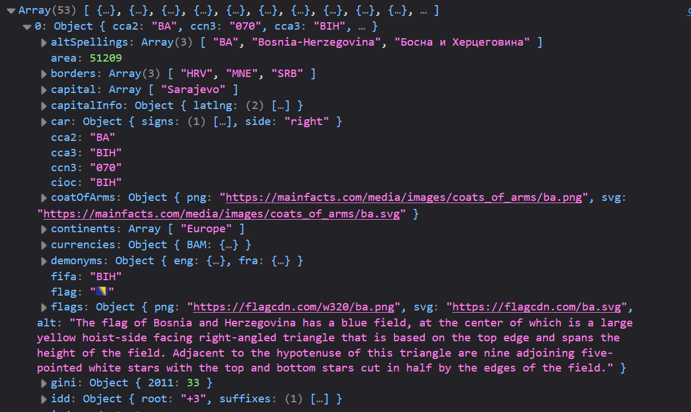
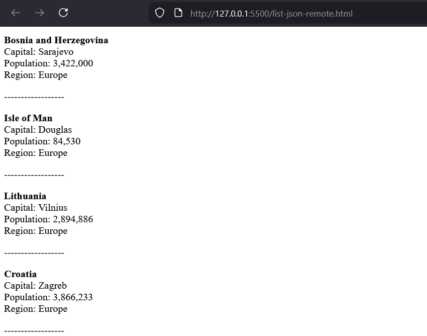
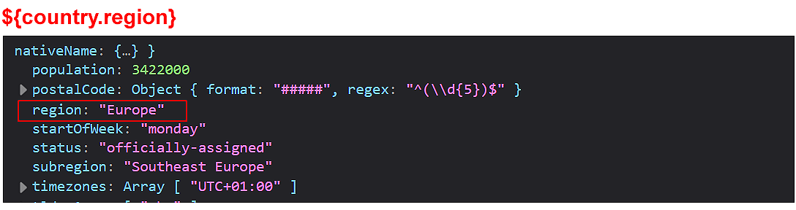
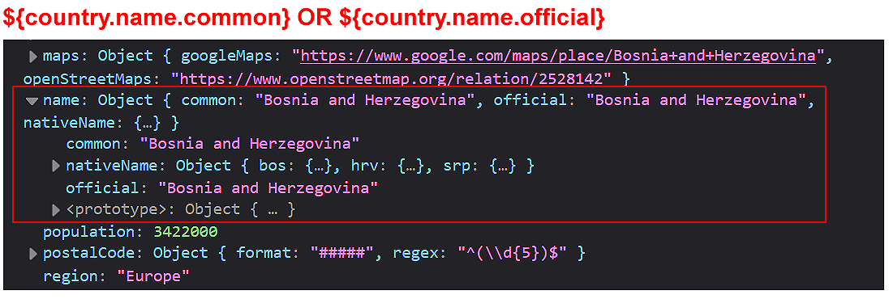
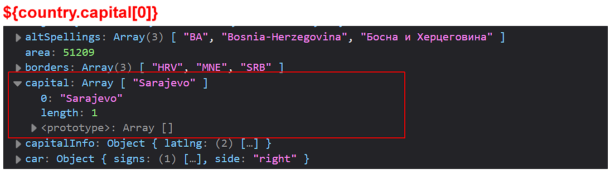
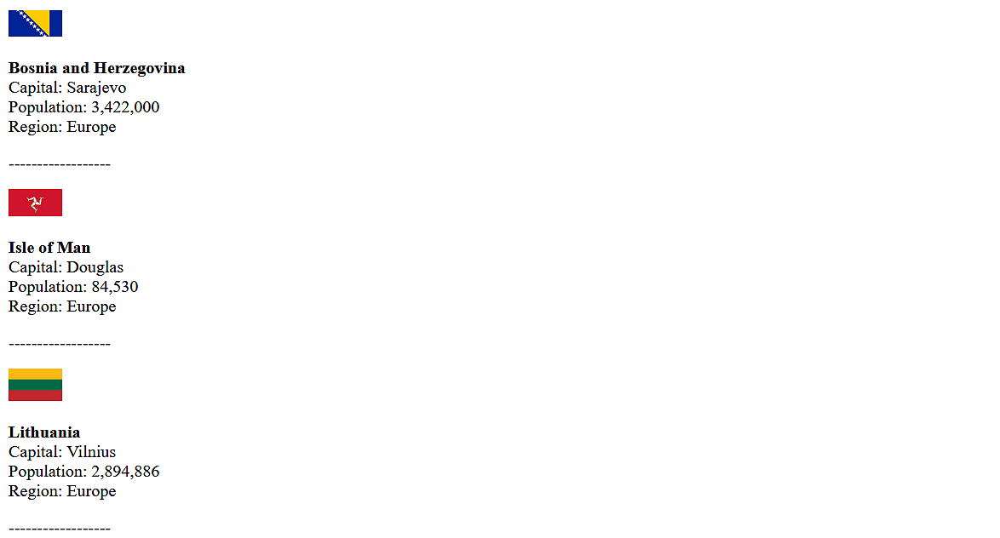
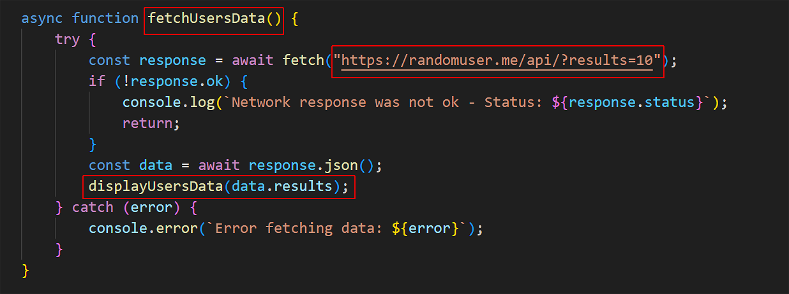

Learning Goals
At the end of this Tutorial, you will be able to:
- Connect to public, third-party APIs using the fetch() method.
- Understand how APIs provide image data as URL strings.
- Extract nested data from complex JSON objects.
- Dynamically output mixed text and image data to the DOM.
For this Tutorial, in your javascript/exercises folder, create a new HTML file named list-remote.html.
Create a new empty text file named list-remote.js and save it in this same folder.
Add a link to list-remote.js in your list-remote.html file using a <script> tag with the defer attribute.
Introduction to remote APIs
In the previous tutorial, you successfully used the Fetch API to load data from a local JSON file such as data/products.json. That is a great start, but the real power of JavaScript is its ability to communicate with live servers across the Internet.
A web API (Application Programming Interface) is essentially a URL that, instead of returning an HTML web page meant for humans, returns raw data (usually in JSON format) to be parsed by JavaScript or other code.
const response = await fetch("REMOTE_URL_ENDPOINT_GOES_HERE"); The error-handling techniques you learned in the previous tutorial will still work exactly the same way — you are simply changing the URL string from a local file path to a remote web address.
In your own JSON files, you had control the structure. However, remote APIs may contain nested objects and arrays within objects that require more careful parsing.
Working with the REST Countries API
Let's begin with a simple example that uses the REST Countries API with a remote URL of https://restcountries.com/v3.1/region/europe. Follow these steps:
- Copy the most basic form of a Fetch API function below to your list-remote.js script file.
async function fetchCountriesData() { // Fetch the resource and get a Response (status, headers, body stream) const response = await fetch("https://restcountries.com/v3.1/region/europe"); // Parse the response object to JSON const data = await response.json(); // Verify the code is working by logging the data to the console console.log(data); } // Fetch the countries immediately when the page loads fetchCountriesData(); - Run the list-remote.html web page from a local server. In your browser console, you can see that the response is complex in structure and detailed in content. 
Parsing and displaying the response
Next, let's output some of the data to a web page. (You don't need to 'consume' all the data in a Fetch API response.)
- In your list-remote.html web page, add a <div> tag with an id of remote-data-container.
- In your list-remote.js script, add the following function.
function displayCountriesData(countriesArray) { const container = document.getElementById("remote-data-container"); let htmlOutput = ""; countriesArray.forEach(country => { htmlOutput += ` <p> <b>${country.name.common}</b><br> Capital: ${country.capital[0]}<br> Population: ${country.population.toLocaleString()}<br> Region: ${country.region} </p> <p>------------------</p> `; }); container.innerHTML = htmlOutput; } - Call this display function from inside your fetchCountriesData() function.
- You browser should show something like the following: 
Note that some of the response properties are simpler to parse than others.
- The region property key is just that - region. You can access it simply by typing the loop variable and the property name: country.region.  The same is true for population. You can make this property more readable by adding a .toLocaleString() method.
- However, the name is a nested object instead of a simple string. So to access it you need to write country.name.common rather than just country.name. 
- The capital is not a string but an array. So you would write country.capital[0] to get the first (usually only) value. 
Understanding image URLs in JSON
APIs often provide URLs for images. That is, the JSON data contains a URL string pointing to where the image lives on the internet.
Note that an API does not send actual image files (like .jpg or .png files) in their JSON responses.
In your .forEach() loop above, add this new line to display the flag of the various countries:
<p><img src="${country.flags.png}" alt="Flag of ${country.name.common}" width="50"></p>
This code injects the URL string of each image into the src attribute of a standard HTML <img> tag. Your browser output should look similar to that below.
♿ Accessibility Tip: Note we're using dynamic alt text. This makes the page usable for screen reader users.
Working with the JSON Placeholder API
Now add a second Fetch API snippet to our web page and script files. The endpoint https://jsonplaceholder.typicode.com/users returns 10 random and fausers.
Follow these steps:
- Update your list-remote.html web page with a second button.
<button class="btn" id="btn-users">Load Users</button> - In your list-remote.js file, update your event delegation function.
// Event listener on the parent container document.getElementById("button-container").addEventListener("click", function(e) { if (e.target.id === "btn-countries") { fetchCountriesData(); } else if (e.target.id === "btn-users") { fetchUsersData(); } }); - In the same script file, copy and paste the fetchCountriesData() function, and update it as shown below. 
- Add the code below to display the fetched user data.
function displayUsersData(usersArray) { const container = document.getElementById("remote-data-container"); let htmlOutput = ""; usersArray.forEach(user => { htmlOutput += ` <p> <b>${user.name} ${user.username}</b><br> Email: <a href="mailto:${user.email}">${user.email}</a><br> Website: <a href="http://${user.website}" target="_blank">${user.website}</a><br> Location: ${user.address.street}, ${user.address.city} </p> `; }); container.innerHTML = htmlOutput; }
You should now see a list of random users when you click the Load Users button.
Adding a grid layout
To make the returned country and user data look more organised, you can use a CSS grid layout. This allows you to display each data item in a responsive grid that adjusts based on the screen size.
Begin in your list-remote.html web page by updating the container for displaying the remote data.
<div id="remote-data-container" style="display: grid; grid-template-columns: repeat(auto-fill, minmax(300px, 1fr)); gap: 20px;"></div>Next, in your list-remote.js file, update the HTML output for the country display function to wrap each country and user card in a styled <div> element.
htmlOutput += `
<div style="border: 1px solid #ccc; padding: 12px; border-radius: 6px;"><img src="${country.flags.png}" alt="Flag of ${country.name.common}" width="100">
<p>
<b>${country.name.common}</b><br>
Capital: ${country.capital[0]}<br>
Population: ${country.population.toLocaleString()}<br>
Region: ${country.region}
</p>
</div>
`;Update the user display function in a similar way.
htmlOutput += `
<div style="border: 1px solid #ccc; padding: 12px; border-radius: 6px;">
<p>
<b>${user.name} ${user.username}</b><br>
Email: <a href="mailto:${user.email}">${user.email}</a><br>
Website: <a href="http://${user.website}" target="_blank">${user.website}</a><br>
Location: ${user.address.street}, ${user.address.city}
</p>
</div>
`;Finally, add this new CSS style to the <head> of your HTML file:
#remote-data-container p { line-height: 1.5 }In your web browser, confirm that the country and user data are displayed in a grid layout.
Try it yourself
Task: Accessing the Rick & Morty character API
Use the public Rick & Morty API to add an option to display character data from this show on your list-remote.html web page.
- In the
<div id="button-container">element of list-remote.html, add a third button with a uniqueidto call the display function for Rick & Morty data. Add the text Load Rick & Morty to the button. - In list-remote.js, make a copy of the
fetchUsersData()display function, rename it, and update its endpoint to:https://rickandmortyapi.com/api/character - Log the data to the console first. Notice that the array of characters is located inside
data.results. Call your Rick & Morty display function (see below) from your fetch function. - Make a copy of the
displayUsersData()display function, rename it, and pass the argumentrmArrayto it. Rename the.forEach()loop variable tocharacter. - Inside the loop, access the character's image (
character.image), name (character.name), and their status (character.status).
In your browser, click the Load Rick & Morty button and verify the data displays correctly.
More learning resources
Tutorial Quiz
Tutorial Podcast
Sample AI prompts
Explain how to read complex JSON structures from an API. How do I know if the data I want is an Object or an Array, and how do I navigate "nested" data paths using dot notation?